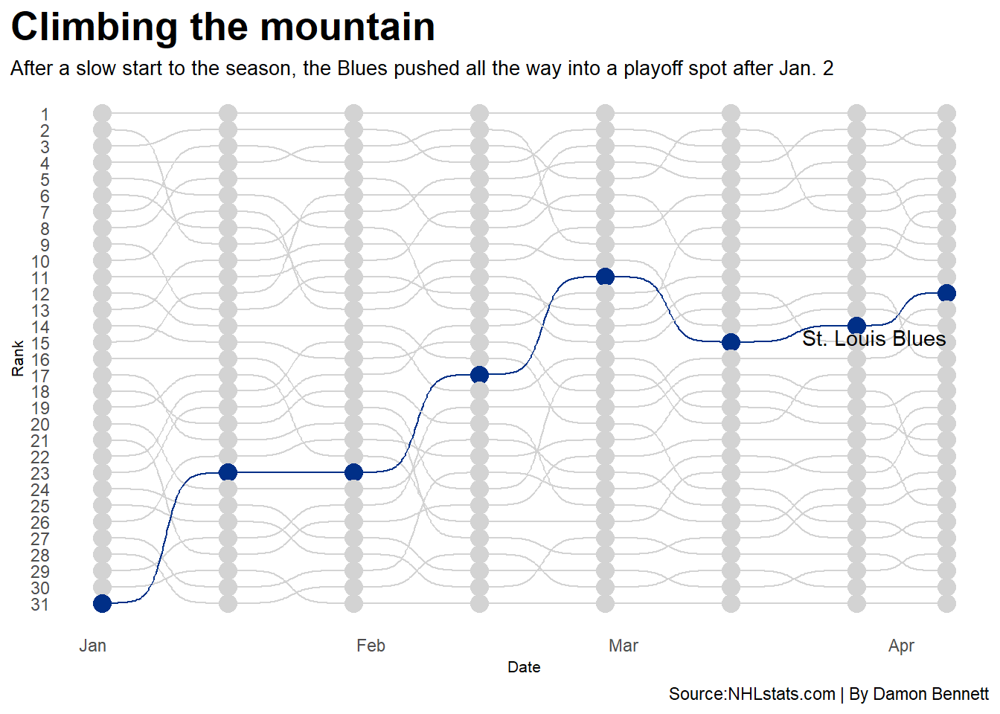
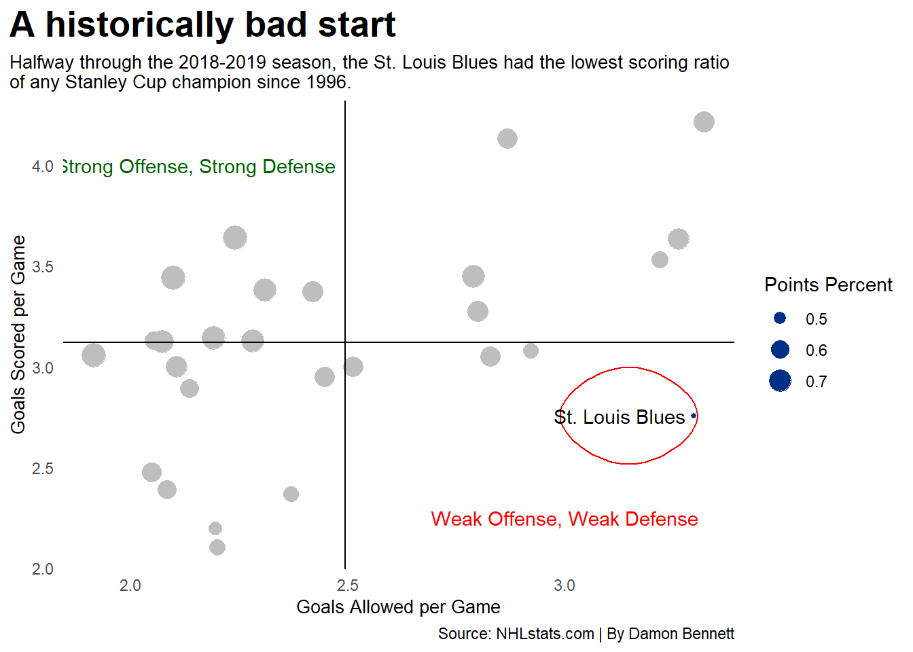

Are the 2019 St. Louis Blues the greatest NHL comeback story?
nhl
hockey
stanleycup
Author
Damon Bennett
Published
April 14, 2025
On January 2, 2019, the St. Louis Blues sat alone at the bottom of the NHL. They held the worst record in the league with 15 wins, 18 losses, and four overtime losses, their head coach had been fired in November, and a fist fight broke out at practice on December 10.
Things were not looking good in St. Louis.
Then, on January 7, Jordan Binnington made his debut as starting goaltender. In his first game after being called up from the AHL, he became the 35th rookie in league history to post a shutout in their first career start in a 3-0 victory over the Philadelphia Flyers.
Code
library(tidyverse)library(ggalt)library(ggtext)library(ggrepel)library(stringr)library(gt)library(ggbump)library(ggplot2)library(patchwork)goalies <-read_csv("NHL 2018-19 Goalie Stats.csv") |>filter(GP>=20) |>arrange(desc(`SV%`))goalies |>select(Player, Tm, GP, GS, W, L, `T/O`, `SV%`) |>filter(`SV%`>=0.922) |>gt() |>cols_label(Tm="Team",GP="Games Played",GS="Games Started",W="Wins",L="Losses",`T/O`="Overtime Losses",`SV%`="Save Percentage" ) |>tab_header(title="Jordan Binnington: Rookie Sensation",subtitle="As a rookie, Jordan Binnington had one of the highest Save Percentages in 2019. " ) |>tab_style(style =cell_text(color ="black", weight ="bold", align ="left"),locations =cells_title("title")) |>tab_style(style =cell_text(color ="black", align ="left"),locations =cells_title("subtitle") ) |>tab_source_note(source_note =md("**By:** Damon Bennett | **Source:** NHL.com")) |>tab_style(locations =cells_column_labels(columns =everything()),style =list(cell_borders(sides ="bottom", weight =px(3)),cell_text(weight ="bold", size=12) ) ) |>opt_row_striping() |>opt_table_lines("none") |>tab_style(style =list(cell_fill(color ="#002F87"),cell_text(color ="#FCB514") ),locations =cells_body(rows = Player =="Jordan Binnington") )
Jordan Binnington: Rookie Sensation
As a rookie, Jordan Binnington had one of the highest Save Percentages in 2019.
Player
Team
Games Played
Games Started
Wins
Losses
Overtime Losses
Save Percentage
Ben Bishop
DAL
46
45
27
15
2
0.934
Robin Lehner
NYI
46
43
25
13
5
0.930
Jack Campbell
LAK
31
25
10
14
1
0.928
Jordan Binnington
STL
32
30
24
5
1
0.927
Thomas Greiss
NYI
43
39
23
14
2
0.927
Laurent Brossoit
WPG
21
19
13
6
2
0.925
Darcy Kuemper
ARI
55
55
27
20
8
0.925
Andrei Vasilevskiy
TBL
53
53
39
10
4
0.925
Anton Khudobin
DAL
41
37
16
17
5
0.923
Jaroslav Halák
BOS
40
37
22
11
4
0.922
By: Damon Bennett | Source: NHL.com
After that, things turned around for St. Louis. From January 23 to February 19, the Blues won a franchise-record 11 games in a row.
In their first 37 games, the Blues had allowed 3.3 goals per game, but scored only 2.77 goals per game, good for 25th and 26th in the league, respectively.
In their next 45 games, they allowed 2.18 goals per game, behind only the New York Islanders, and scored 3.16 per game, tied with the Washington Capitals for 10th most in the league. Binnington recorded four more shutouts and led the league in wins, saves percentage and goals-against average after his debut.
As a shock to nobody, scoring more goals and allowing opponents to score less goals translates to wins. After January 2, St. Louis went 30-10-5. Only Tampa Bay Lightning won more games (31) before getting swept in the first round by the Columbus Blue Jackets. Ouch.
Code
rankings <-read_csv("NHL 2019 Rankings v5.csv") |>mutate(Date =mdy(Date))stlrank <- rankings |>filter(Team=="St. Louis Blues")ggplot() +geom_bump(data=rankings, aes(x=Date, y=Rank, color=Team)) +geom_point(data=rankings, aes(x=Date, y=Rank, color=Team), size =4) +geom_text(data=stlrank |>filter(Date ==max(Date)), aes(x=Date, y=Rank, label=Team), vjust=3.2, hjust=1) +scale_color_manual(values =c("#D3D3D3","#D3D3D3","#D3D3D3","#D3D3D3","#D3D3D3","#D3D3D3","#D3D3D3","#D3D3D3","#D3D3D3","#D3D3D3","#D3D3D3","#D3D3D3","#D3D3D3","#D3D3D3","#D3D3D3","#D3D3D3","#D3D3D3","#D3D3D3","#D3D3D3","#D3D3D3","#D3D3D3","#D3D3D3","#D3D3D3","#D3D3D3","#002F87","#D3D3D3","#D3D3D3","#D3D3D3","#D3D3D3","#D3D3D3","#D3D3D3"))+scale_y_reverse(breaks=c(1,2,3,4,5,6,7,8,9,10,11,12,13,14,15,16,17,18,19,20,21,22,23,24,25,26,27,28,29,30,31)) +labs(title="Climbing the mountain", subtitle="After a slow start to the season, the Blues pushed all the way into a playoff spot after Jan. 2", y="Rank", x ="Date", caption="Source:NHLstats.com | By Damon Bennett")+theme_minimal()+theme(legend.position ="none",panel.grid.major =element_blank(),plot.title =element_text(size =20, face ="bold"),axis.title =element_text(size =8),plot.subtitle =element_text(size=10), panel.grid.minor =element_blank(),plot.title.position ="plot" )

On March 29th, St. Louis clinched the No. 3 seed in the Central Division. In the playoffs, they never played less than six games in a series, and the fireworks continued in the final.
On June 12, 2019, St. Louis hoisted the Stanley Cup for the first time ever, after defeating the Boston Bruins 4-1 in Game 7 of the Stanley Cup Final, becoming the first team in the expansion era (since 1967, the year St. Louis joined the NHL) to win the Stanley Cup after being in last place more than 20 games into the season.
That stat sounds weird because it is. Two teams have won the Stanley Cup with losing records, but that was before color TV, and when the NHL was only six teams.
Late season revivals have happened before in the NHL. The most recent example is the Los Angeles Kings in 2012, who were the 8th overall seed in the Western Conference, and defeated the New York Rangers to claim the cup. The Kings were never in last place in the league, however, and any other dramatic turnaround occurred when hockey sticks were wooden and vital organ protection was optional.
The NHL began playing 82 games per season in 1996. When comparing St. Louis to the other 28 champions since, it’s pretty clear just how dismal their first 37 games were.
Code
rankings96oct <-read_csv("96 first half.csv") |>mutate(season =1996.1)|>select(Team,GP,W,L,P,`P%`,GF,GA,`GF/GP`,`GA/GP`,season)rankings97oct <-read_csv("97 first half.csv") |>mutate(season =1997.1)|>select(Team,GP,W,L,P,`P%`,GF,GA,`GF/GP`,`GA/GP`,season)rankings98oct <-read_csv("98 first half.csv") |>mutate(season =1998.1)|>select(Team,GP,W,L,P,`P%`,GF,GA,`GF/GP`,`GA/GP`,season)rankings99oct <-read_csv("99 first half.csv") |>mutate(season =1999.1)|>select(Team,GP,W,L,P,`P%`,GF,GA,`GF/GP`,`GA/GP`,season)rankings00oct <-read_csv("00 first half.csv") |>mutate(season =2000.1)|>select(Team,GP,W,L,P,`P%`,GF,GA,`GF/GP`,`GA/GP`,season)rankings01oct <-read_csv("01 first half.csv") |>mutate(season =2001.1)|>select(Team,GP,W,L,P,`P%`,GF,GA,`GF/GP`,`GA/GP`,season)rankings02oct <-read_csv("02 first half.csv") |>mutate(season =2002.1)|>select(Team,GP,W,L,P,`P%`,GF,GA,`GF/GP`,`GA/GP`,season)rankings03oct <-read_csv("03 first half.csv") |>mutate(season =2003.1)|>select(Team,GP,W,L,P,`P%`,GF,GA,`GF/GP`,`GA/GP`,season)rankings04oct <-read_csv("04 first half.csv") |>mutate(season =2004.1)|>select(Team,GP,W,L,P,`P%`,GF,GA,`GF/GP`,`GA/GP`,season)rankings06oct <-read_csv("06 first half.csv") |>mutate(season =2006.1)|>select(Team,GP,W,L,P,`P%`,GF,GA,`GF/GP`,`GA/GP`,season)rankings07oct <-read_csv("07 first half.csv") |>mutate(season =2007.1)|>select(Team,GP,W,L,P,`P%`,GF,GA,`GF/GP`,`GA/GP`,season)rankings08oct <-read_csv("08 first half.csv") |>mutate(season =2008.1)|>select(Team,GP,W,L,P,`P%`,GF,GA,`GF/GP`,`GA/GP`,season)rankings09oct <-read_csv("09 first half.csv") |>mutate(season =2009.1)|>select(Team,GP,W,L,P,`P%`,GF,GA,`GF/GP`,`GA/GP`,season)rankings10oct <-read_csv("10 first half.csv") |>mutate(season =2010.1)|>select(Team,GP,W,L,P,`P%`,GF,GA,`GF/GP`,`GA/GP`,season)rankings11oct <-read_csv("11 first half.csv") |>mutate(season =2011.1)|>select(Team,GP,W,L,P,`P%`,GF,GA,`GF/GP`,`GA/GP`,season)rankings12oct <-read_csv("12 first half.csv") |>mutate(season =2012.1)|>select(Team,GP,W,L,P,`P%`,GF,GA,`GF/GP`,`GA/GP`,season)rankings14oct <-read_csv("14 first half.csv") |>mutate(season =2014.1)|>select(Team,GP,W,L,P,`P%`,GF,GA,`GF/GP`,`GA/GP`,season)rankings15oct <-read_csv("15 first half.csv") |>mutate(season =2015.1)|>select(Team,GP,W,L,P,`P%`,GF,GA,`GF/GP`,`GA/GP`,season)rankings16oct <-read_csv("16 first half.csv") |>mutate(season =2016.1)|>select(Team,GP,W,L,P,`P%`,GF,GA,`GF/GP`,`GA/GP`,season)rankings17oct <-read_csv("17 first half.csv") |>mutate(season =2017.1)|>select(Team,GP,W,L,P,`P%`,GF,GA,`GF/GP`,`GA/GP`,season)rankings18oct <-read_csv("18 first half.csv") |>mutate(season =2018.1)|>select(Team,GP,W,L,P,`P%`,GF,GA,`GF/GP`,`GA/GP`,season)rankings19oct <-read_csv("19 first half.csv") |>mutate(season =2019.1)|>select(Team,GP,W,L,P,`P%`,GF,GA,`GF/GP`,`GA/GP`,season)rankings20oct <-read_csv("20 first half.csv") |>mutate(season =2020.1)|>select(Team,GP,W,L,P,`P%`,GF,GA,`GF/GP`,`GA/GP`,season)rankings21oct <-read_csv("21 first half.csv") |>mutate(season =2021.1)|>select(Team,GP,W,L,P,`P%`,GF,GA,`GF/GP`,`GA/GP`,season)rankings22oct <-read_csv("22 first half.csv") |>mutate(season =2022.1)|>select(Team,GP,W,L,P,`P%`,GF,GA,`GF/GP`,`GA/GP`,season)rankings23oct <-read_csv("23 first half.csv") |>mutate(season =2023.1)|>select(Team,GP,W,L,P,`P%`,GF,GA,`GF/GP`,`GA/GP`,season)rankings24oct <-read_csv("24 first half.csv") |>mutate(season =2024.1)|>select(Team,GP,W,L,P,`P%`,GF,GA,`GF/GP`,`GA/GP`,season)rankings <-bind_rows(rankings96oct,rankings97oct,rankings98oct,rankings99oct,rankings00oct,rankings01oct,rankings02oct,rankings03oct,rankings04oct,rankings06oct,rankings07oct,rankings08oct,rankings09oct,rankings10oct,rankings11oct,rankings12oct,rankings14oct,rankings15oct,rankings16oct,rankings17oct,rankings18oct,rankings19oct,rankings20oct,rankings21oct,rankings22oct,rankings23oct,rankings24oct)champhalf <- rankings |>filter( Team =="Colorado Avalanche"& season ==1996.1| Team =="Detroit Red Wings"& season ==1997.1| Team =="Detroit Red Wings"& season ==1998.1| Team =="Dallas Stars"& season ==1999.1| Team =="New Jersey Devils"& season ==2000.1| Team =="Colorado Avalanche"& season ==2001.1| Team =="Detroit Red Wings"& season ==2002.1| Team =="New Jersey Devils"& season ==2003.1| Team =="Tampa Bay Lightning"& season ==2004.1| Team =="Carolina Hurricanes"& season ==2006.1| Team =="Anaheim Ducks"& season ==2007.1| Team =="Detroit Red Wings"& season ==2008.1| Team =="Pittsburgh Penguins"& season ==2009.1| Team =="Chicago Blackhawks"& season ==2010.1| Team =="Boston Bruins"& season ==2011.1| Team =="Los Angeles Kings"& season ==2012.1| Team =="Chicago Blackhawks"& season ==2013.1| Team =="Los Angeles Kings"& season ==2014.1| Team =="Chicago Blackhawks"& season ==2015.1| Team =="Pittsburgh Penguins"& season ==2016.1| Team =="Pittsburgh Penguins"& season ==2017.1| Team =="Washington Capitals"& season ==2018.1| Team =="St. Louis Blues"& season ==2019.1| Team =="Tampa Bay Lightning"& season ==2020.1| Team =="Tampa Bay Lightning"& season ==2021.1| Team =="Colorado Avalanche"& season ==2022.1| Team =="Vegas Golden Knights"& season ==2023.1| Team =="Florida Panthers"& season ==2024.1)champfirsthalf <- champhalf |>filter(str_ends(season, ".1"))stlfirsthalf <- champfirsthalf |>filter(Team=="St. Louis Blues")ggplot() +geom_point(data=champfirsthalf,aes(x=GA/GP, y=GF/GP, size=`P%`), color="grey")+geom_point(data=stlfirsthalf,aes(x=GA/GP, y=GF/GP, size=`P%`),color="#002F87")+geom_encircle(data=stlfirsthalf, aes(x=GA/GP-.15, y=GF/GP), s_shape=.001, expand=.004, colour="red")+geom_vline(xintercept =2.494009) +geom_hline(yintercept =3.118627)+labs(size ="Points Percent")+geom_text_repel(data=stlfirsthalf, aes(x=GA/GP, y=GF/GP, label=Team),face="bold")+geom_text(aes(x=2.15, y=4, label="Strong Offense, Strong Defense"), color="darkgreen") +geom_text(aes(x=3, y=2.25, label="Weak Offense, Weak Defense"), color="red")+labs(title="A historically bad start", subtitle="Halfway through the 2018-2019 season, the St. Louis Blues had the lowest scoring ratio\nof any Stanley Cup champion since 1996.", y="Goals Scored per Game", x ="Goals Allowed per Game", caption="Source: NHLstats.com | By Damon Bennett")+theme_minimal()+theme(panel.grid.major =element_blank(),plot.title =element_text(size =20, face ="bold"),axis.title =element_text(size =10),plot.subtitle =element_text(size=10), panel.grid.minor =element_blank(),plot.title.position ="plot" )

The 2019 St. Louis Blues had the single lowest points percentage, second most goals allowed per game, and seriously low goals scored per game halfway through the season. Yet, 161 days after hitting rock bottom, they hoisted the biggest trophy in sports, after the biggest comeback season of the modern era.
After firing their head coach, picking a fight at practice, and taking a chance on a 25-year-old rookie goaltender, the St. Louis blues mounted one of the greatest comebacks in sports. Should teams look to repeat this combination to replicate their success? Probably not.